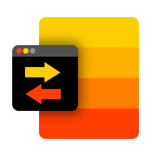

EDM System - document and task management system
This application is free and open-source software.
EDM System is an electronic document and task tracker server application with simple, intuitive and fast interface.
It is relatively easy to install and configure.
Functions of the application:
- Documents: create, upload files, edit, delete, approve
- Approval list for documents
- User profiles, companies, departments: create, edit, delete
- Tasks: create, edit, upload files, assign, forward, change status (mark as done, cancel, etc.), add comments with files attached
- Notifications by e-mail: about user creation to that user, about approvals, about changes and comments in a task to related users
- Themes and localization support
- UX/UI features: bb-code, search results highlighting, etc.
- Some basic bruteforce protection
- Redis support to store sessions and other shared data
- Other functions, not mentioned in this list
Supported themes: dark, light, monochrome-dark, monochrome-light.
Supported languages: English, Spanish, French, Russian.
Supported databases: SQLite, Microsoft SQL Server, MySQL(MariaDB), Oracle, PostgreSQL.
The application runs on modern browsers: Chrome, Firefox, Safari, and does not support Internet Explorer.